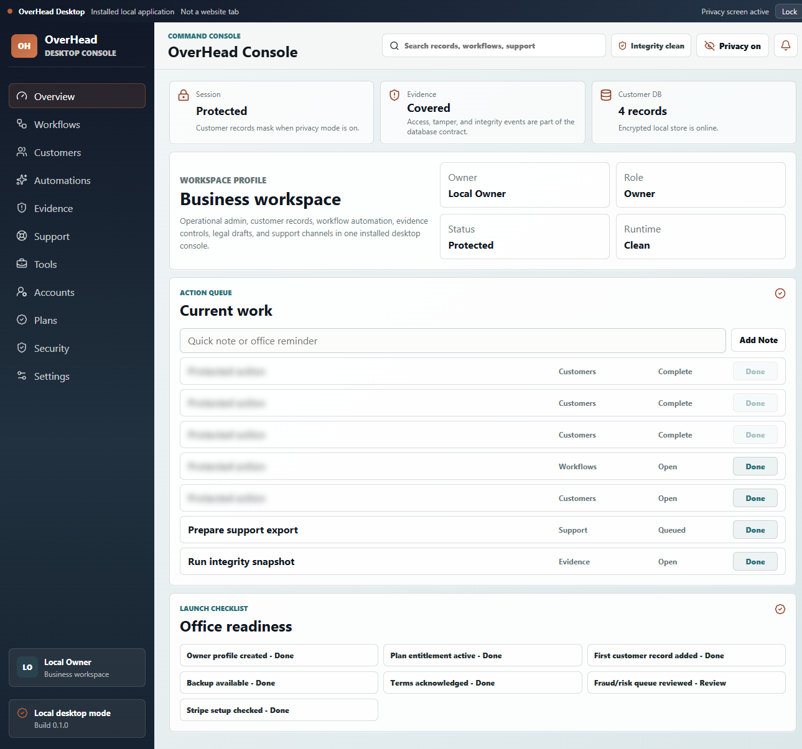

Every call starts from scratch.
Notes, messages, customer history, and exceptions are fragmented across tools and people.
Pre-seed pitch deck · working prototype
OverHead helps business owners keep customer details, quotes, follow-ups, invoices, approvals, payment information, and daily office work from getting lost across too many tools.
Pre-seed planning · product and pilot validationThe problem
Customer details, quotes, invoice status, staff decisions, payment tabs, and next steps often live in different places—or only in the owner’s head.
Notes, messages, customer history, and exceptions are fragmented across tools and people.
Quotes, payment reminders, and customer responses become harder to see and own.
Owners need staff momentum without losing visibility over sensitive decisions and records.
The solution
OverHead is not one fixed process forced on every company. Each office can set up its own customers, staff, templates, approval rules, reminders, and daily work.
Customer records, quotes, invoices, payment reminders, and follow-up queues stay connected to the work that needs attention.
Approvals, local records, privacy settings, backups, and activity history help the owner stay in control.
Set up templates, timing, reminders, and approvals for the business.
Give staff a path to act while keeping important decisions visible.
Designed for resilient day-to-day work, not abstract dashboard theater.
Product proof

Built today
Validation milestones before broader launch: production billing activation, secure shared-account rollout, provider connections, and measured customer pilots.
Customer
The core product serves businesses that have outgrown loose notes and disconnected point tools, but do not want the cost or complexity of an enterprise suite.
The person carrying customer history, staff questions, money follow-up, and the burden of “what happened with that?”
People scheduling, answering customers, preparing quotes, following up, and keeping the office moving.
Start with the day-to-day problems of service offices, then build simple setups around what customers prove they need.
The first marketing message can speak to one industry without limiting who OverHead can serve.
Why now
Customers expect fast answers, quick payment follow-up, and fewer mistakes. AI can help with small tasks, but owners still need one place to review and run the work.
Business model
The prototype has a proposed three-tier plan. Early pilots will show what customers will pay for, what setup help they need, and which parts of the product they keep using.
Solo owner: customer records, task queue, basic backup tools, and a reliable daily command view.
Busy teams: staff profiles, office rules, legal center, and clearer follow-through.
High-trust offices: deeper records, audit controls, larger teams, and concierge onboarding.
These prices are an early test, not current revenue or live customer billing.
Finding early customers
Find owner-led businesses with clear follow-up, quoting, invoicing, and office-control pain.
Set up the first office process with each customer, watch how they use it, and listen closely to feedback.
Turn the most useful patterns into clear onboarding, marketing, and product connections.
Reach business owners and office leads with a message that speaks to their everyday problems and a clear pilot offer.
Track whether customers finish setup, come back, use the main features, and see enough value to pay.
Execution plan
Complete shared sign-in, setup, customer support, safe releases, and the tools needed to learn from pilot use.
Work with early customers, improve setup, test pricing, and build the parts they use again and again.
Ship useful connections, turn pilots into customers, and build a steady way to find and keep customers.
Early success means customers finish setup, keep using it, give useful feedback, and see enough value to pay.
Owners can see what needs attention, staff can act within limits, and customer and money work stops falling through the cracks.
Team
Working web, desktop, and Android application portfolio; prototype delivery; Firebase-hosted product operations; and a background in Network Administration.
First priorities: more product/engineering help, safe SaaS operations, pilot setup and customer support, and careful marketing.
Add founder name, short biography, prior employers/credentials, advisors, and any cofounder details before external investor outreach.
Capital discipline
Set the raise amount only after the operating budget, pilot plan, runway, and financing terms have been reviewed with the founder and qualified legal and financial advisers.
This is an allocation framework, not an offer, valuation, forecast, or representation of customer revenue.
The ask
Pre-seed capital will finish the product, fund hands-on pilot customers, test the price, and prove that businesses use OverHead every day.
Seeking pre-seed conversations · terms to be confirmedContact: Black Lion Media Studio · solidartentertainment@gmail.com · overhead-office.web.app